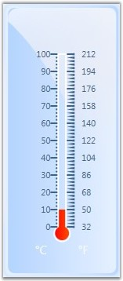

The Linear Bar Pointer is used to represent the values over the scale, which is integrated on the linear scale and its value variation look like a thermometer. The following are few important properties of Linear Bar Pointers.
Table 19: Property Table
|
Property |
Description |
|
BackgroundBrush |
To set the Background brush for the pointer. |
|
BorderBrush |
To set the Border brush for the pointer. |
|
BorderWidth |
To set the Border width of the pointer cap. Default value is 0. |
|
PointerWidth |
To set width of the pointer. Default value is 0. |
|
Value |
To set the value of the pointer. Default value is 0. |
|
BarStyle |
To specify the bar pointer style. Default value is Rectangle. |
The following code examples illustrate how to set these properties:
|
[XAML]
<my:LinearGauge Grid.Column="1" Height="310" Name="linearGauge1" Width="131.188" Margin="15.36,3,27,10"> <my:LinearGauge.Scales> <my:LinearScale BorderWidth="3" MajorIntervalValue="10" Maximum="100" Minimum="0" MinorIntervalValue="2" ScaleBarLength="220" ScaleBarSize="15" ScaleStyle="Rectangle" ShadowOffset="0"> <my:LinearScale.Pointers> <my:LinearBarPointer PointerWidth="8" Value="10" Name="barpointer1"/> </my:LinearScale.Pointers> </my:LinearScale> </my:LinearGauge.Scales> </my:LinearGauge> |
|
[C#]
LinearScale scale = new LinearScale(); scale.BackgroundBrush = Brushes.GreenYellow; scale.BorderBrush = Brushes.DarkGreen; scale.BorderWidth = 2; scale.Minimum = 0; scale.Maximum = 50; scale.MinorIntervalValue = 2; scale.MajorIntervalValue = 10; scale.ScaleBarLength = 220; scale.ScaleBarSize = 25; scale.ScaleStyle = LinearScaleStyle.RoundedRectangle; this.lineargauge1.Scales.Add(scale);
// Adding Linear Bar Pointer to the Linear Scale. LinearBarPointer barPointer = new LinearBarPointer(); barPointer.BackgroundBrush = Brushes.Orange; barPointer.BorderBrush = Brushes.DarkOrange; barPointer.BorderWidth = 2; barPointer.PointerWidth = 8; barpointer.EnablePointerInteraction = true; barPointer.Value = 10; scale.Pointers.Add(barPointer); |
The following screen shot illustrates the above settings.

Figure 70: Linear Bar Pointer